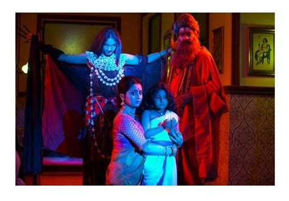

Almost everywhere in the world and in most parts of India, the supernatural is usually divided into four broad categories of spirits — those that don’t harm or good spirits, evil spirits or spirits that harm, prets or spirits of our ancestors who can either help or harm, and spirits that neither help nor harm and are content to live their spirit existence. The Nishi Dak belongs to the second category which is also the most dangerous category. What is a Nishi Dak ? Nishi means night or dark, dak or daak means call. The Nishi Dak is a spirit that calls out to one at night or in the dark in a familiar voice. It is a very dangerous spirit, once fairly commonly encountered in Bengal — where it still known as the Nishir Daak or Call of the Night Spirit, Bihar and Jharkhand where it is known as the Nishi. How does a Nishi operate ? The Nishi calls out to its victim at night in the voice of a person known to the victim, appears as a form which the victim can’t fully see because it is always in the distance, or appears in the form of the known person whose voice it has used, and keeps beckoning the intended victim to follow it. It walks very fast and at a distance ahead of the victim and usually leads the way to a deserted area where it reveals its true form to the helpless victim, and then almost invariably kills the victim. The killing takes place through different means.
The important thing about the Nishi is that it cannot call out more than twice. That is why, just like the Chalawa which can also assume different forms and voices but can be identified because it cannot keep its eyes focused, the Nishi can be identified if it calls out a person’s name no more than two times and that too only at night. Even today, many people in areas frequented by the Nishi — yes, such areas still exist ! — are aware that they must not respond unless even a known voice doesn’t call out three — or to be on the absolutely safe side, four times. However, Nishis’ can otherwise converse with the victim in a voice familiar to the victim. It is only rarely that Nishis’ kill a person very close to one’s home. Also, it usually picks only one victim at night and that too on dark moon nights. It is very seldom that anybody other than the victim can even see the hazy form of a Nishi.
It is believed that the Nishis’ are spirits of people who have not had a respectful or a complete release or pind-daan at the time of transition from earth to the astral planes. A tea vendor close to my house hails from Bihar and he tells me that in and around his village there is a Nishi who is always on the prowl. And they know the Nishi is the soul of a villager who died many generations ago but his family did not complete the rituals at Pret Pahar —Mountain of Spirits — in Gaya. At first the soul which could not get mukti or release from earthly bonds haunted the family as a pret and when they still didn’t do anything, turned into a Nishi, and one by one, lured all the family members to their death. To this day, nobody, according to the tea vendor, goes out at night if called. And these days, he says, a Nishi’s call can even come on a mobile — there has been one such instance where a person was killed after responding to a call on his mobile to come outside. The way and speed with which he was killed was the work of a Nishi says the tea vendor. People who are killed in road accidents, especially on a deserted road at night are also believed very often to have been killed by Nishis’ who need to kill to survive. And so, it is said, are those who die unnatural, unexplained deaths at night.